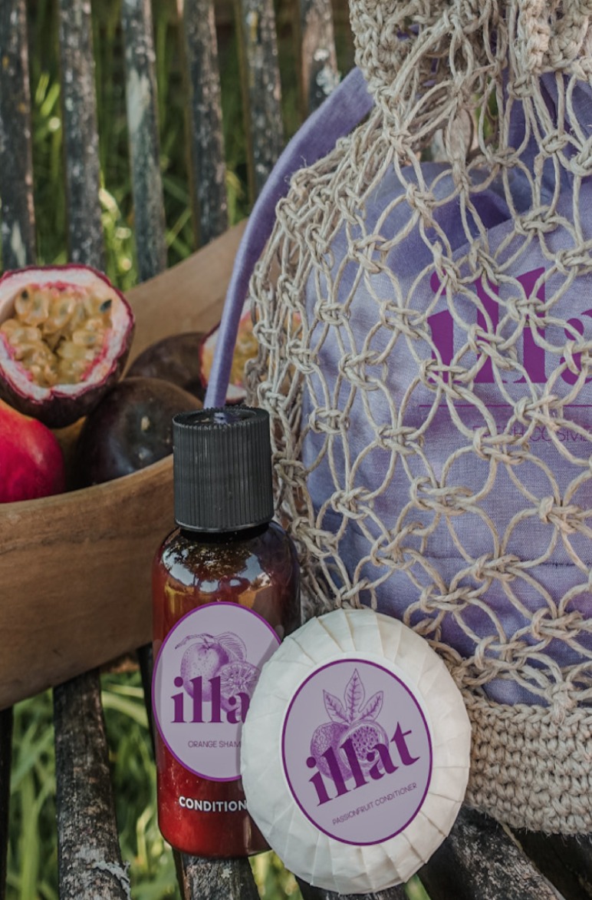
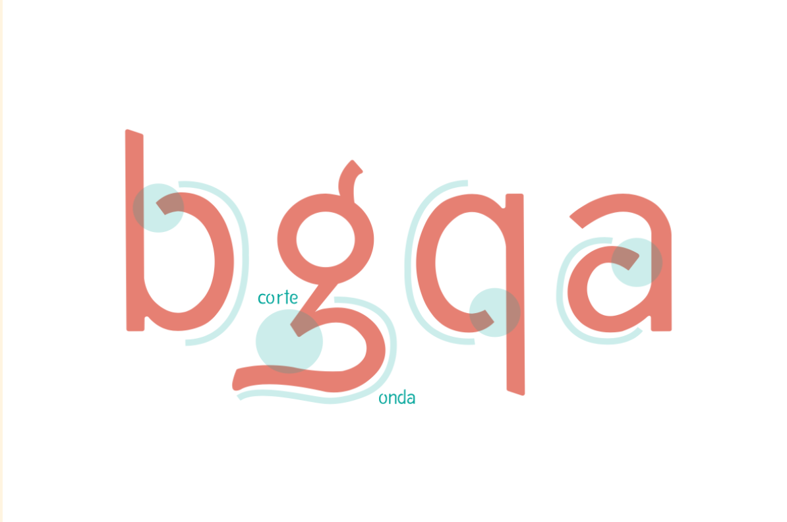

Cartaz ATWI
O cartaz do ATWI foi desenvolvido com o objetivo de promover o evento "And The Winner Is 2020". Este evento tem como objetivo premiar os alunos da licenciatura e mestrado de Design pela sua ótima prestação nos diferentes projetos que desenvolvem. O conceito por traz deste trabalho baseia-se no processo de desenvolvimento dos projetos. Com essa ideia, tentei demonstrar que nesse processo existem tanto momentos altos, como baixos - quase como diferentes níveis; e para além disso também existem recompensas a nível de satisfação pessoal durante todo o processo. Cheguei então à conclusão que o processo de trabalho é quase como um jogo, onde subimos e descemos níveis constantemente, vemo-nos obrigados a tomar decisões e por vezes somos recompensados por essas mesmas decisões. Sendo assim, todo o conceito do meu cartaz segue essa ideia de vídeo jogo, níveis e recompensas (moedas).
Dossier The Grand Budapest Hotel
A paginação do Dossier de Investigação sobre o filme de Wes Anderson "The Grand Budapest Hotel" foi um projeto muito interessante e desafiador na medida em que devíamos inspirarmo-nos no mundo de Wes Anderson. Neste dossier abordamos vários temas com bastante detalhe como: Enredo, Personagens, Cinematografia e ainda Simbolismos. Concluímos que O Grand Budapest Hotel de Wes Anderson, inspirado nos escritos de Stefan Zweig, é um filme intensamente estilizado, comemorado pelo seu cenário memorável, paleta de cores rica e direção meticulosa. Aqui , Anderson, emprega técnicas de ilu- minação, profundidade de campo e edição narrativa para refletir como a memória de Zero dos eventos retratados e as suas associações emocionais afetam a sua habilidade como narrador de histórias. Em termos de inspiração para a paginação, este filme deu-me todo um ambiente e estética completamente distinto, o acabou por ser muito divertido explorar.

Marca Illat
A marca Illat surgiu do iniciativa de tentar aos poucos mudar a forma como os produtos cosméticos tem impacto no nosso ambiente. O grande objetivo era dar a perceber às pessoas que é possível usufruirmos de momentos de self-care, sem que tenhamos de por em perigo o nosso planeta. Uma marca que acredita que de alguma forma podemos devolver à natureza algo, por tudo que ela nos dá. Sendo assim, a sua grande missão é mostrar a importância de mudarmos os nossos hábitos desde as pequenas coisas como a nossa higiene; promover compras éticas; mostrar o luxo que produtos amigos do ambiente podem ter; mostrar todas as capacidades que este tipo de produtos têm. Movidos por valores como a defesa dos direitos humanos, a luta contra a testagem em animais, o respeito pelas comunidades que promovem bens materiais, o consumo de produtos éticos, o uso de produtos feitos de materiais frescos e orgânicos comprados a comércios pequenos, têm como objetivo chegar a todos que partilham destes mesmos valores e que procuram a mudança.
Packaging da Marca Illat
Em seguimento dos valores que a Illat carrega e valoriza, nasceu o seu packaging feito manualmente por artesãs qualificadas, usando a técninca do macramê. Este packaging surge a pensar não só no seu uso para a marca Illat, mas para qualquer objetos que queiramos transportar. Este contentor foi criado para garantir um melhor armazenamento dos nossos produtos durante o seu transporte. Para além disso, este garante durabilidade, sendo possível reutilizá-lo sempre que formos obter novos produtos. Quisemos pensar mais longe, oferecendo aos nossos clientes um design com uma dupla vida. Enquanto que o saco de pano pode ser reutilizado para qualquer compra; a cesta pode ser utilizada para qualquer tipo de arrumação, seja na rua ou em casa. Todos os materiais utilizados, fio norte e tecido, vão de encontro a tudo aquilo que defendemos. Ajudam-nos a criar algo único e singular para todos os que fazem parte da nossa comunidade.

Tipografia Waves
Waves Sans é uma fonte tipográfica dinâmica com características, na caixa alta e baixa, provenientes da ondulação do oceano. O mar é um organismo com vida própria, em constante movimento. O que se traduz em olhos ovais e algumas ascendentes curvas. A cor azul, o som das ondas, o cheiro da maresia, o sabor a sal nos lábios e a sensação da água fria a envolver o corpo, são algumas das experiências sensoriais que vivemos quando estamos contacto com o oceano. É esta singularidade, energia e agilidade que a fonte pretende transmitir. Em todos os caracteres está presente o conceito do corte dar origem à onda O nome Waves, sugere sal e sol num tipo tipográfico de inspiração marítima.
Calendario Tipografico
O calendário tipográfico alusivo ao mês de Maio, teve como principal conceito a celebração do dia do Mar. A melhor forma de celebrar isso é valorizar as inúmeras vidas distintas que nele habitam, daí ter procurado representar um peixe. Todo o calendário foi produzido apenas pelas utilização de caracteres tipográficos e apenas uma cor: o azul. Desta forma, sendo com a cor como com a ilustração, tornou-se eficaz e simples a mensagem que pretendia transmitir. A celebração da vida marítima.
Capa We all shine
Numa sociedade que nos ensina a não gostarmos do nosso corpo, é preciso reconhecer que isto é um grande problema. Porque é que o meu corpo não haveria de ser suficiente? Porque é que não nos ensinam a amá-lo como se fosse tudo que temos? Porque não nos ensinam a priorizar o amor próprio? Resulta num processo de aprendizagem e aceitação do nosso corpo, compreendendo que aquilo que nos diferencia é que nos torna seres únicos. É a aceitação das nossas falhas, das nossas características, das nossas inseguranças. É o amor pelo nosso corpo - nosso mundo. Desenvolvi este projeto no âmbito de fazer de nós, mulheres, apaixonadas e agradecidas por quem somos, pois todas fomos feitas para brilhar e para deixar algo de único neste mundo.

Paginação Stojo
Esta paginação de Stojo, consistiu no estudo a fundo do objeto e respetivamente da sua marca e identidade visual.
Passadeira Kamu
A passadeira Kamu surge com o objetivo é trazer o conforto em movimento para todas as casas. Atualmente, a sociedade atravessa uma pandemia, o que nos obriga a voltar as rotinas para o espaço doméstico. Com isto, a prática de desporto em ginásios deixa de ser aconselhada, e surge uma procura por alternativas para evitar o sedentarismo. Torna-se necessário fundir a atividade física com o conforto dos nossos lares. Equipamentos, anteriormente de dimensões “monstruosas” e carácter impessoal, passam a ser considerados elementos decorativos que se devem integrar no ambiente familiar. As dimensões do objeto reduzem e a sua camuflagem torna-se essencial.
Candeeiro
Este candeeiro foi desenhado com o objetivo de ser apenas fabricado com a técnica de extrusão de alumínio.
Floreira
Esta floreira de exterior foi desenhado com o objetivo de ser apenas fabricado por fundição de ferro.
Caixas de Arrumacao
Estas caixas de arrumação foram desenhadas com o objetivo de ser apenas fabricado pela conformação da chapa de aço, passando por vários processos como: corte a laser, estampagem, soldadura e pintura eltrostática.